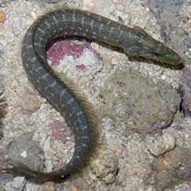
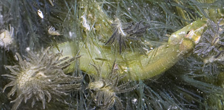
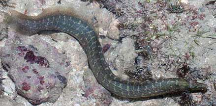
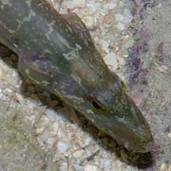
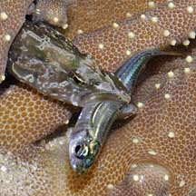
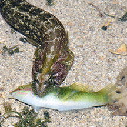
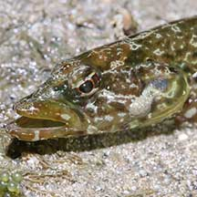
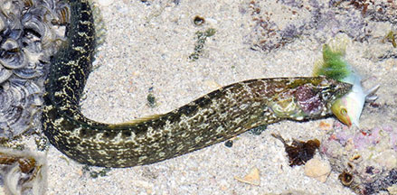

|
|
| fishes text index | photo index |
| Phylum Chordata > Subphylum Vertebrata > fishes > Family Pseudochromidae |
| Carpet
eel-blenny Congrogadus subducens Family Pseudochromidae updated Sep 2019
Where seen? This snake-like fish is commonly seen on many of our shores, among coral rubble and near seagrasses. Most are well camouflaged and are thus often overlooked. Big ones trapped in small pools at low tide usually hide deep under coral rubble with only a bit of the tail sticking out. But small ones may be seen swimming about in larger pools among seagrass, corals or coral rubble. What are carpet eel-bleenies? Often mistaken for a snake, this fish is not even an eel! It belongs to the Family Pseudochromidae (also called Dottybacks). According to FishBase: The family has 16 genera and 98 species. Most are live in the Indo-Pacific Ocean. Many of the other members of the family are smaller and a lot shorter (about 10cm long or less), and some are very colourful. Carpet eel-blennies belong to the subfamily Congrogadinae (they were previously in a separate family Congrogadidae). Features: Up to 30cm long, those seen are about 10-15cm long, but tiny ones 5cm or less can also be seen. Body cylindrical, somewhat flattened sideways, tapering to an eel-like tail, with the dorsal, anal and tail fins continous. Unlike true eels, it has pectoral fins and scales, and large gill covers. Large mouth with thick lips, and large eyes near the top of the head. Being long and narrow, the fish can easily squirm through tight openings and hide in crevices. Its floral markings add to its camouflage. It can also change its colours. Besides the more commonly seen greenish ones, colours seen include brown, dull to bright green, black and even bluish ones. Sometimes mistaken for sea snakes or eels (Family Muraenidae). Here's more on how to tell apart sea snakes, eels and eel-like animals. |
 Sisters Island, Jul 04 |
 Tiny one hunting among Hairy green seaweed and Bryopsis slugs. Sisters Island, May 12 |
 Dorsal, anal and tail fins are continuous. Sisters Island, Jul 04 |
 Large mouth, large eyes, large gill covers. Sisters Island, Jul 04 |
| What does it eat? The Carpet eel-blenny
preys on small fish, crabs and shrimps. It usually hunts alone. Eel-blenny babies: Carpet eel-blennies lay their eggs in small clumps. |
 Caught a Tropical silverside. Sisters Island, Aug 09 |
 Caught a Diamond tuskfish. Cyrene Reef, Jun 16 Photo shared by Loh Kok Sheng on his blog. |
 Doesn't appear to have lots of sharp teeth. Pulau Tekukor, May 10 Photo shared by James Koh on flickr. |
| Human uses: Although large, the
Carpet eel-blenny is not eaten by people. It is, however, harvested
from the wild for the live aquarium trade and sold as "wolf eels".
But they are not the most popular aquarium fish, as they tend to eat
their tankmates. Status and threats: Other dottybacks are more popular in the aquarium trade. Harvesting may involve the use of cyanide or blasting, which damage the habitat and kill many other creatures. Like other fish and creatures harvested from the sea, most die before they can reach the retailers. Without professional care, most die soon after they are sold. Those that do survive are unlikely to breed successfully. Like other creatures of the intertidal zone, they are affected by human activities such as reclamation and pollution. Poaching by hobbyists also have an impact on local populations. |
| Carpet eel-blennies on Singapore shores |
On wildsingapore
flickr
|
| Other sightings on Singapore shores |
 Caught a Diamond tuskfish. Cyrene Reef, Jun 16 Photo shared by Loh Kok Sheng on his blog. |
| Family
Pseudochromidae recorded for Singapore from Wee Y.C. and Peter K. L. Ng. 1994. A First Look at Biodiversity in Singapore. *from Lim, Kelvin K. P. & Jeffrey K. Y. Low, 1998. A Guide to the Common Marine Fishes of Singapore. +Other additions (Singapore Biodiversity Records, etc)
|
Links
|